Languages with real evidence
World View and matrix captures from freshly cloned open-source projects. Every capture names its source revision and its limits.
Missing evidence is not a zero. A language example does not establish complete compiler or runtime support. Grey surfaces stay unknown; the matrix shows static dependencies.
The desktop overview can include additional discovered project scopes; requested source filters are recorded in the provenance. World View package cycles and matrix file cycles use different aggregation. Compare the same scope and granularity.
Apache Kafka
Java repository overview with a clients source configuration; external references remain partial.
Revision dc9f1f42828f · Apache-2.0 · 2026-11-20

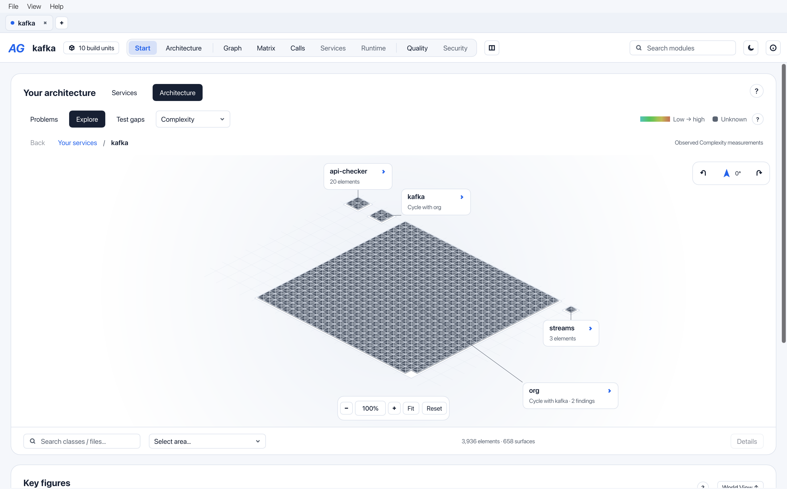

Microsoft eShop
C# repository overview. Packages were not restored for these captures; compiler evidence can be incomplete.
Revision ab10e4c68fd2 · MIT · 2026-11-20


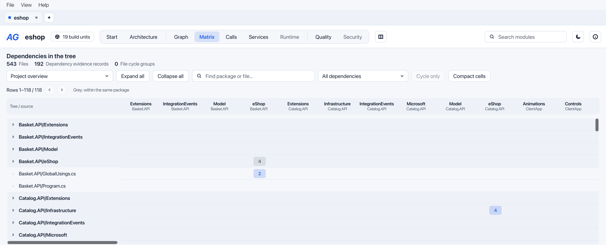
NestJS
Workspace overview, including discovered sample projects, without installing the project's compiler. Grey values are unavailable measurements.
Revision e0600bb04c3a · MIT · 2026-11-20

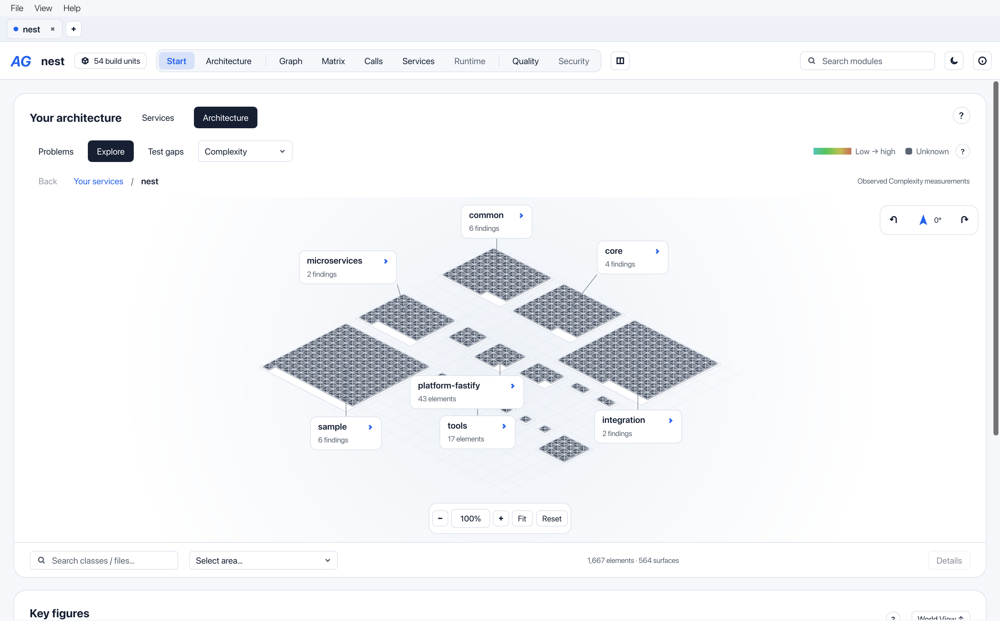

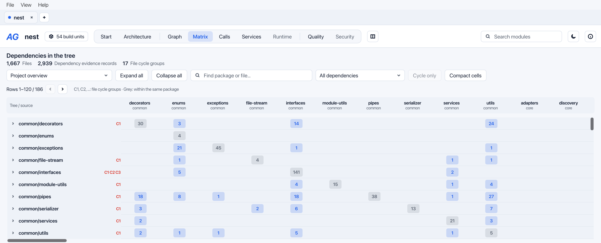
Prometheus
Imports are available. This capture environment has no Go SDK, so compiler metrics stay unknown.
Revision 06170caaea44 · Apache-2.0 · 2026-11-20

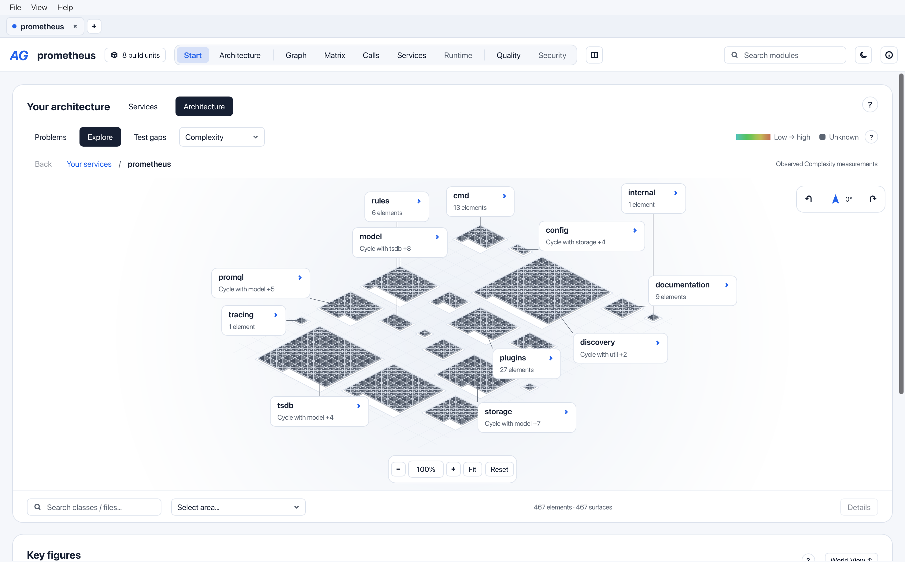

ripgrep
Workspace crates, syntax metrics. No rust-analyzer or project-compiler opt-in.
Revision 43fc97d43a4c · MIT OR Unlicense · 2026-11-20

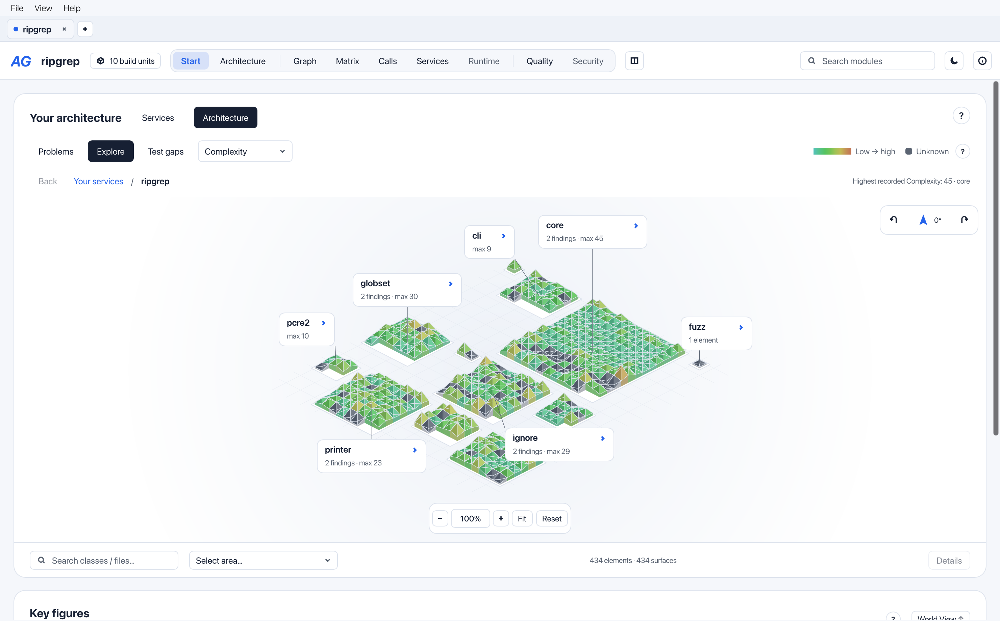

Django
Django package sources, parsed locally without importing the project.
Revision c67d872765e0 · BSD-3-Clause · 2026-11-20


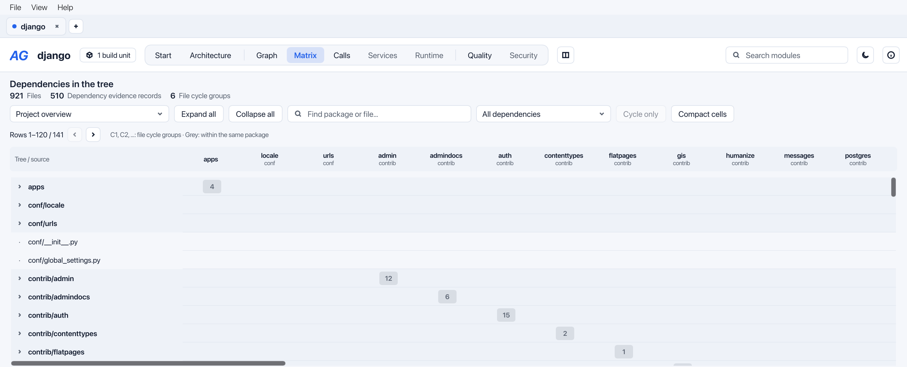
Symfony
Symfony repository overview. Statically bound calls and syntax metrics; dynamic receivers remain unresolved.
Revision 2894e4eeea9e · MIT · 2026-11-20


OkHttp
Kotlin workspace overview, including discovered build and sample modules. Gradle is not run; dynamic calls remain gaps.
Revision 619d9c987aa7 · Apache-2.0 · 2026-11-20

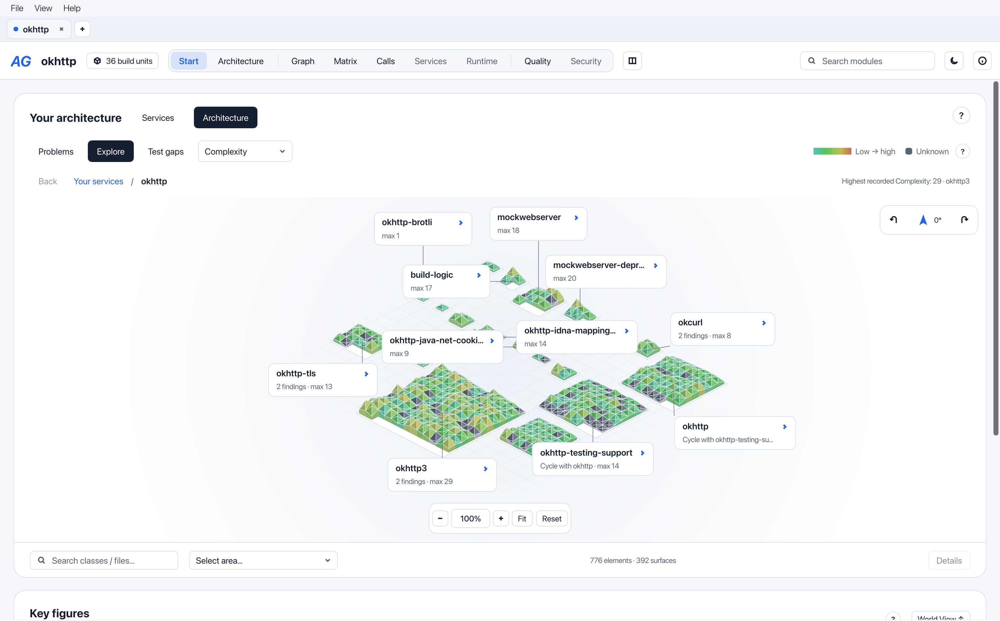

LevelDB
Source and include relationships. Missing include paths remain unresolved; no preprocessor or compiler runs.
Revision 29465588d3df · BSD-3-Clause · 2026-11-20


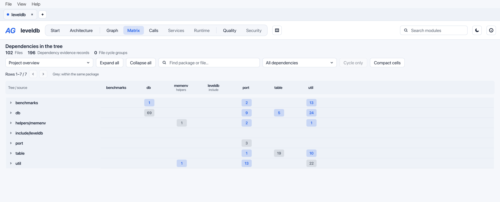
SwiftNIO
Swift Package Manager repository overview, including discovered integration and benchmark targets. Xcode projects are outside this analysis.
Revision ae78c343cde1 · Apache-2.0 · 2026-11-20

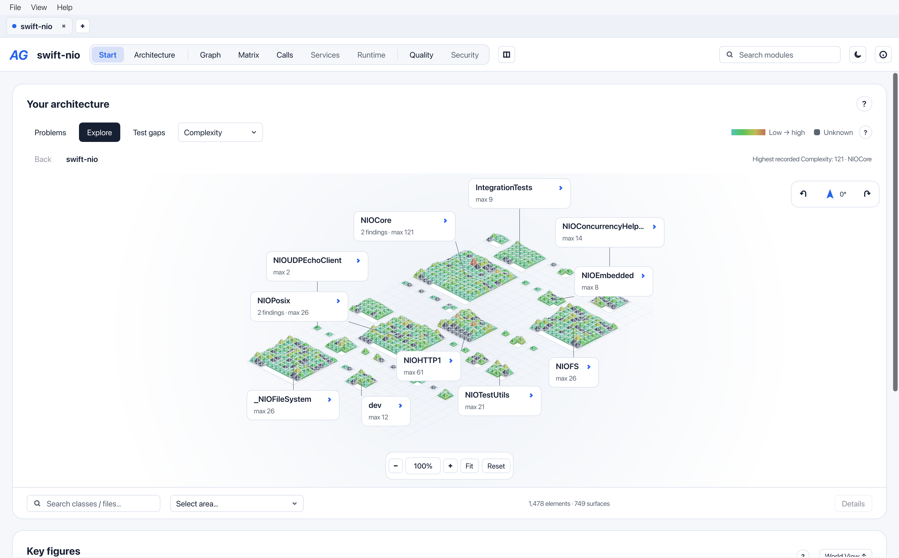

Mastodon
Mastodon repository overview, including its Ruby app and lib plus discovered frontend scopes. Dynamic Ruby dispatch is not complete runtime coverage.
Revision 9bd703117f99 · AGPL-3.0 · 2026-11-20


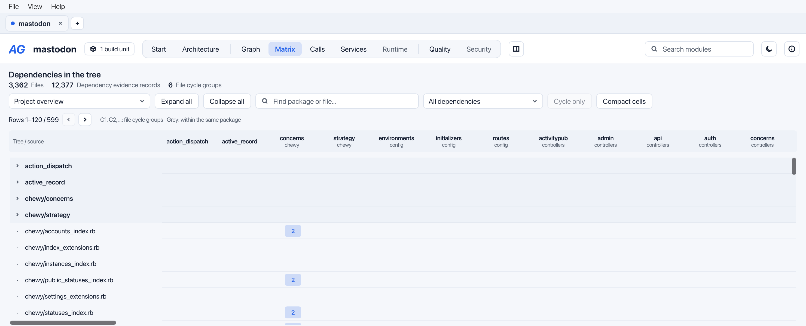
Apache Pekko
Scala repository overview with an actor source configuration and additional discovered scopes; implicit and cross-language calls remain unresolved.
Revision 1d75feef3929 · Apache-2.0 · 2026-11-20

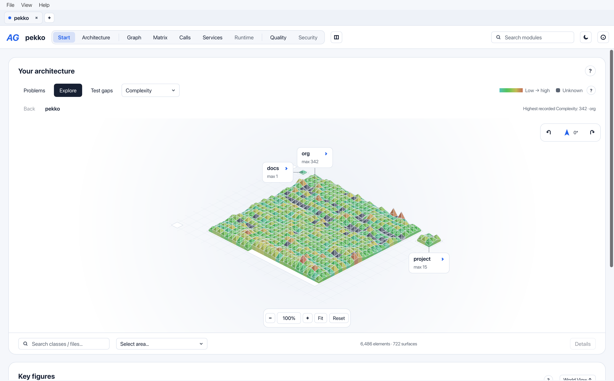

Reproduce the captures
The raw images are unchanged offscreen renders of the desktop app. The provenance below records full commit IDs, license checksums, source filters and capture parameters. The projects were not built and their dependencies were not installed.
Provenance and capture parameters (JSON) · About these examples